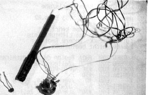
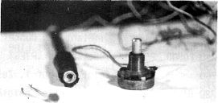

Nascom Journal |
Mai 1982 · Ausgabe 5 |
Die Überschrift übertreibt sicher nicht. Die Bauteile zum Lichtgriffel finden sich sicher in jeder Bastelkiste, Benötigt werden nur ein lichtempfindlicher Widerstand (LDR), ein Potentiometer (oder nach Ausmessen auch Festwiderstände) und das „Gehäuse“ eines ausgedienten Filzschreibers.
Die Schaltung ist so primitiv, daß sich Josef Zeller strikt weigert, sie ins reine zu zeichnen. Aber gerade der geringe Aufwand fordert dazu heraus, mit solch einem Instrument wie dem Lichtgriffel einmal zu experimentieren, über Aufbau und „Abgleich“ braucht wohl beim Betrachten der Schaltung nichts mehr gesagt werden; wichtiger als die Einstellung des Potis scheint mir sowieso der Abgleich des Bildschirms auf Kontrast und Helligkeit. Auch sollte man zu helles Streulicht im Raum vermeiden.
Das erste Unterprogramm tastet den Bildschirm ab, um die Position des Lichtgriffels auf dem Schirm zu finden. Um nicht laufend jede Adresse abzuklappern, werden jeweils zwei Zeilen hell und dann dunkel gezeichnet. Wird der Pen in einer Zeile entdeckt, wird seine Position durch laufendes Halbieren der „Zeile“ eingeengt und schließlich in HL übergeben, Diese Methode spart Zeit, zeigt aber doch die gewaltige Unterlegenheit gegenüber einem „professionellen“ Lightpen, der z.B. an eine Grafikkarte angeschlossen ist. Der Schirm wird laufend mit „Sternchen“
überzogen, und man bemerkt, wie der Griffel häufig verzweifelt versucht, die richtige Position zu finden, zumal, wenn man ihn nicht exakt auf einer Zeile positioniert hat. Sie können Ihre Erfahrungen damit selbst mit den beiden Hauptprogrammen KEYB (Start #D24) und DRAW (Start #D2D) machen.
Sehr viel verläßlicher (und wahrscheinlich den Einsatz in manchen Programmen wert) ist die andere Subroutine HLPEN, die nur vorher definierte Bildschirmadressen untersucht. Die Zuverlässigkeit läßt sich durch die Anzahl der Prüfschleifen steigern (Zeile 1590); bei mir lief das Test-Menu-Programm allerdings fehlerlos mit drei Wiederholungen, wie im Listing angegeben.
Das Assemblerlisting ist für die Anwendung auf anderen Systemen sehr offen gehalten, Im Hexdump wird Bit 0 von Port B zum Anschluß des Griffels verwendet. (Siehe Schaltbild). Die Unterprogramme sind im Prinzip verschieblich, benutzen allerdings Unterprogrammaufrufe, die man beim Verschieben beachten muß. Ebenso die Sprünge in Zeile 1140 und 2260.
Falls Sie den Lichtgriffel in einem Ihrer Programme einsetzen, lassen Sie uns bitte davon hören. Wer weiß, welche Einsatzmöglichkeiten es da geben könnte. (Günter Kreidl spielt mit dem Gedanken, Noten für den Soundgenerator vom Bildschirm abzulesen).
| Seite 15 von 32 |
|---|